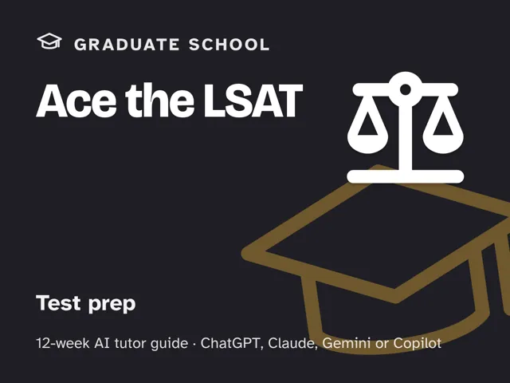
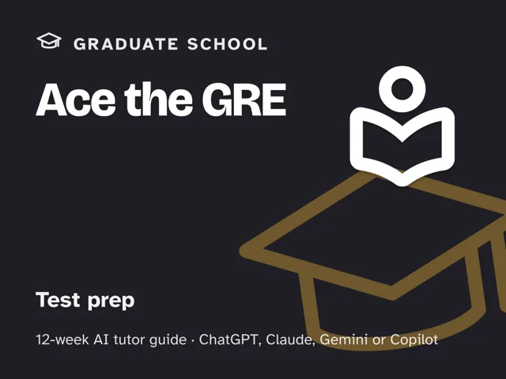

Ace the GRE
$29Instant download: a PDF to read, a browser copy, and the AI-tutor file you hand straight to any AI assistant.Buy it on Etsy →
Take the free placement check first: 15 minutes, and it names the week to start at.
Most GRE prep is a thick book you read cover to cover, including the sections you already know cold. This 12-week plan starts with a real diagnostic across Verbal, Quant, and the essay, then sends your AI tutor after exactly what's shaky, teaching the strategy behind each question type, quizzing you on it, and running timed practice that gets reviewed miss by miss. It's honest about effort and honest about scores: no shortcuts, no guarantees, just a system that puts your hours where they'll actually move the needle.
What you get
- 12 ready-to-run, ~60-minute weekly sessions. Each one has a plain-language concept explanation, a concrete worked example, a minute-by-minute session plan with the AI-tutor prompts built in, a measurable "show me" checkpoint, common mistakes to watch for, and practice to lock it in. You lead the session: every step is timed and written out for you, so no tutoring expertise is required. Week 12 also asks you to sit one full-length official practice test (about two hours) before its debrief session.
- A digital guide with an orientation that sets the one rule for the whole season: practice under real timing and review every miss, right or wrong guess alike, for the WHY. Includes a "Never used an AI chat assistant? Start here" walkthrough that takes a complete beginner from zero to ready in about five minutes, using a free AI assistant (no paid plan needed).
- Four rescue prompts in the front matter: a rescue prompt for when you're frustrated, a guardrail that refuses to just hand you answers, a plateau-breaker for when a section score stalls, and a check that you really understand a topic rather than just getting lucky.
- A running gap map, built in week 1 and revisited at the dress rehearsal, so you can see exactly how far each section moved.
The 12 weeks
- Where Do You Actually Stand? Full diagnostic gap map
- Know the Battlefield: the GRE's real, section-adaptive format
- Text Completion & Sentence Equivalence I
- Text Completion & Sentence Equivalence II + Vocabulary Strategy
- Reading Comprehension: Structure Over Speed
- Reading Comprehension: Harder Passages & Question Types
- Quant: Arithmetic & Algebra Foundations
- Quant: Data Interpretation & Geometry
- The Analytical Writing Essay
- Full Timed Practice I: Verbal + Quant, Section by Section
- Full Timed Practice II: Mixed Sections + Pacing
- Dress Rehearsal and the Honest Plan
Who it's for
Graduate-school applicants who want a study system, not just a stack of questions, whether you're starting from scratch or have already taken a practice test and want your remaining weeks spent on what's actually weak.
Why this instead of a free chatbot
A free chatbot will happily answer GRE questions all day, but it doesn't know what you don't know, doesn't hold you to a clock, and won't make you review your misses. This pack ships the structure a chatbot lacks: an adaptive diagnosis that maps your real gaps section by section, a 12-week progression that drills strategy before speed, timed full-length and section practice that mimics test-day conditions, and a review discipline (every miss gets diagnosed for the WHY) that a static prep book simply can't do for you.
FAQ
- Is this an official GRE product? No. This pack is not affiliated with, endorsed by, or connected to ETS or any GRE test maker, and it contains no official test content. Use it alongside ETS's own materials (the official guide, POWERPREP practice tests, and the current GRE rules and format) as your source of truth.
- Will this guarantee a certain score or get me into a program? No. No score, percentile, or admission outcome is guaranteed. This pack is a study system that puts your effort where it counts; the result depends on you, your starting point, and how much you practice.
- Which AI does it use? Any modern AI assistant (ChatGPT, Claude, Copilot, Gemini, and similar) works; free versions are enough, no paid plan required. Never used an AI chat assistant before? The guide's first section walks complete beginners through setup in about five minutes before Week 1 starts.
- I'm not in the US. Does it work for me? Yes. The GRE is the same English-language test worldwide. The guide is written in US English, and every weekly launch prompt tells the AI to use your country or region (as you give it, as it infers, or by asking) for spelling, units, money, school terms, and examples.
- Do I need to already be good at standardized tests? No. Week 1 is a diagnostic specifically so the plan meets you where you actually are, not where you assume you are.
- How much time per week? One ~60-minute session, once a week, fully scripted: every step is timed and written out for you, so no prior tutoring or AI experience is needed. Week 12 also asks you to sit one full-length official practice test (about two hours) before its debrief session.
- Refunds? Standard marketplace refund policy applies.
$29Instant download: a PDF to read, a browser copy, and the AI-tutor file you hand straight to any AI assistant.Buy it on Etsy →